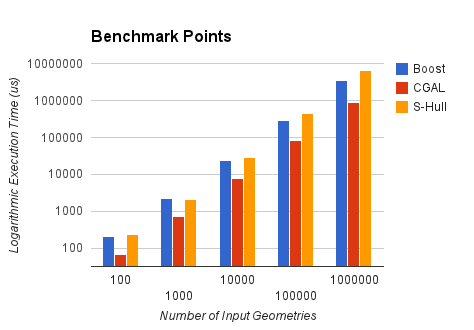
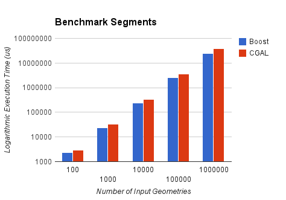

目录
- Boost.Polygon 主页
- 设计概述
- 各向同性
- 坐标概念
- 区间概念
- 点概念
- Segment 概念
- 矩形概念
- Polygon 90 概念
- 带孔 Polygon 90 概念
- Polygon 45 概念
- 带孔 Polygon 45 概念
- 多边形概念
- 带孔多边形概念
- Polygon 90 集合概念
- Polygon 45 集合概念
- 多边形集合概念
- 90 度连通性提取
- 45 度连通性提取
- 连通性提取
- 90 度属性合并
- 45 度属性合并
- 属性合并
- Voronoi 主页
- Voronoi 基准测试
- Voronoi 构建器
- Voronoi 图
其他资源
Polygon 赞助者

Voronoi 基准测试
基准测试详情
从拓扑角度看, Delaunay 三角剖分是 Voronoi 图的对偶数据结构, 因此提供 Delaunay 三角剖分构建例程的库也被纳入了基准测试. 然而, 从计算角度看, Voronoi 图包含更多信息, 因为它嵌入了与三个或更多输入几何相切的内切圆圆心坐标相关的信息.基准测试由两部分组成:
- 在 32 位整数网格上均匀分布的随机点集合的 Voronoi 图 / Delaunay 三角剖分的构建 (voronoi_benchmark_points.cpp)
- 在 32 位整数网格上均匀分布的随机不相交线段集合的 Voronoi 图 / Delaunay 三角剖分的构建 (voronoi_benchmark_segments.cpp).
库
| 库 |
Boost.Polygon |
CGAL |
SHull |
| 官方页面 |
www.boost.org/libs/polygon |
http://www.cgal.org |
http://www.s-hull.org |
| 算法 |
扫描线 |
增量式 |
sweep-hull |
| 支持的输入几何 |
点与线段 |
点与线段 |
点 |
| 输出数据结构 |
Voronoi 图 |
Delaunay 三角剖分 |
Delaunay 三角剖分 |
| 复杂度 |
O(N log N) |
O(N log N) | O(N log N) |
| 内存使用 |
O(N) |
O(N) |
O(N) |
| 稳健性策略 |
惰性算术、精确谓词、拓扑分析 |
惰性算术、精确谓词、拓扑分析 |
非稳健 |
| 输出坐标精度 |
128 机器 epsilon |
无输出坐标 |
无输出坐标 |
| 外部依赖 |
无 |
Boost, GMP, MPFR |
无 |
其他已知的库 (OpenVoronoi, Triangle, Vroni) 将来会考虑纳入基准测试.
系统配置
硬件: Intel i5-7600 2.8 GHz, 16GiB RAM.操作系统: Ubuntu 13.04 64 位.
编译器: GCC 4.7.3.
库与依赖: Boost 1.54.0, CGAL-4.3-beta1, GMP 5.1.4, MPFR 3.1.2, S-Hull.
基准测试结果
随机点基准测试

| 测试规格 |
平均构建时间 (秒) |
||||||
| 点数 |
运行次数 |
Boost
Linux-64 |
CGAL
Linux-64 |
S-Hull
Linux-64 |
|||
| 100 |
10000 |
0.000206 |
0.000073 |
0.000243 |
|||
| 1000 |
1000 |
0.002250 |
0.000753 |
0.002184 |
|||
| 10000 |
100 |
0.024100 |
0.007917 |
0.030552 |
|||
| 100000 |
10 |
0.292000 |
0.084336 |
0.451913 |
|||
| 1000000 |
1 |
3.470000 |
0.902300 |
6.603814 |
|||
随机线段基准测试

| 测试规格 |
平均构建时间 (秒) | ||||
| 线段数 |
运行次数 |
Boost
Linux-64 |
CGAL
Linux-64 |
||
| 100 |
10000 |
0.002284 |
0.002985 |
||
| 1000 |
1000 |
0.023240 |
0.032180 |
||
| 10000 |
100 |
0.237700 |
0.337400 |
||
| 100000 |
10 |
2.488000 |
3.633000 |
||
| 1000000 |
1 |
25.00000 |
39.090000 |
||
| 版权: | 版权所有 © Andrii Sydorchuk 2010-2012. |
|---|---|
| License: | 按 Boost 软件许可 1.0 版 (Boost Software License, Version 1.0) 分发. (随附文件 LICENSE_1_0.txt 或复制于 http://www.boost.org/LICENSE_1_0.txt) |